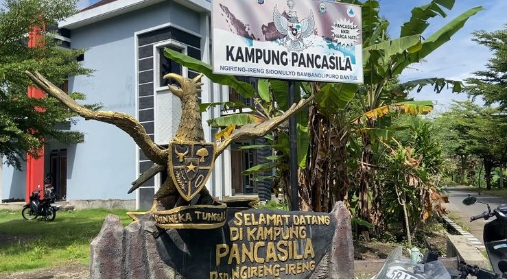

DUSUN NGIRENG-IRENG
SENSUS DUSUN NGIRENG-IRENG Ini Diharapkan Sedikit Bisa Membantu Masyarakat dalam Kegiatan Sensus Penduduk Yang dibuat oleh KKN-T kelompok 12 Universitas Alma Ata
Video Profil Dusun
SENSUS
Sensus atau cacah jiwa adalah cara terstruktur untuk mendapatkan informasi deskriptif tentang jumlah dari sebuah populasi.
Lihat Sensus